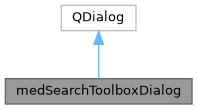

|
MUSICardio 4.2
MUSICardio application created by Inria Epione, IHU LIRYC and Université de Bordeaux
|
Loading...
Searching...
No Matches
|
MUSICardio 4.2
MUSICardio application created by Inria Epione, IHU LIRYC and Université de Bordeaux
|


Public Member Functions | |
| medSearchToolboxDialog (QWidget *parent, QHash< QString, QStringList > toolboxDataHashParent) | |
| QStringList | getFindText () |